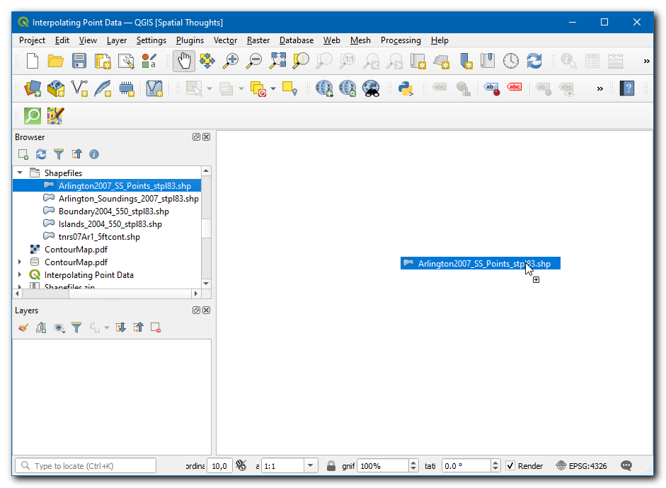
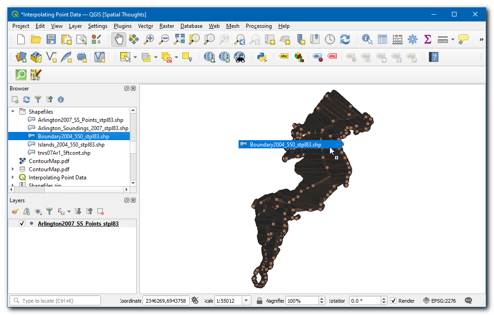
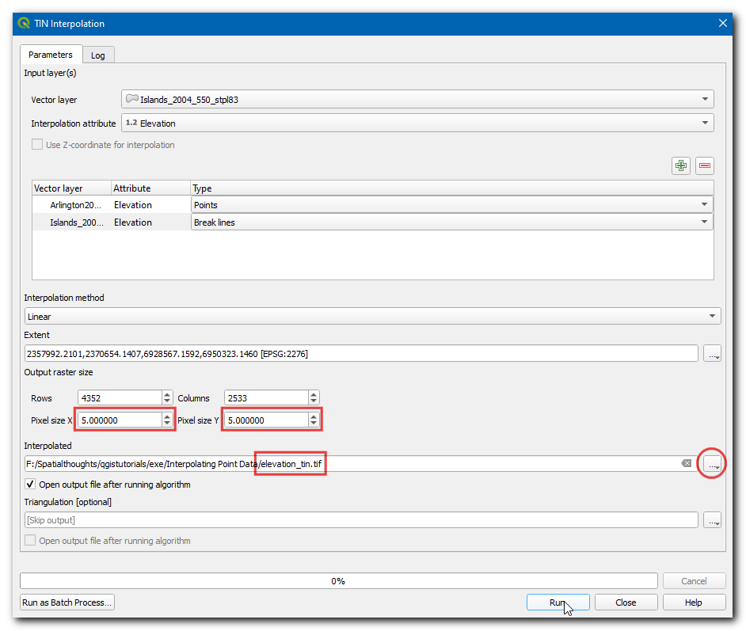
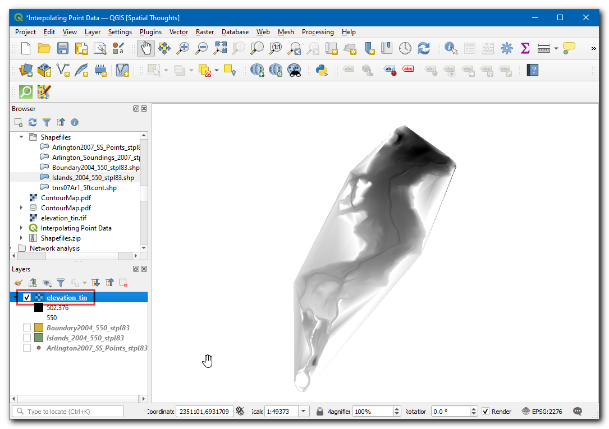
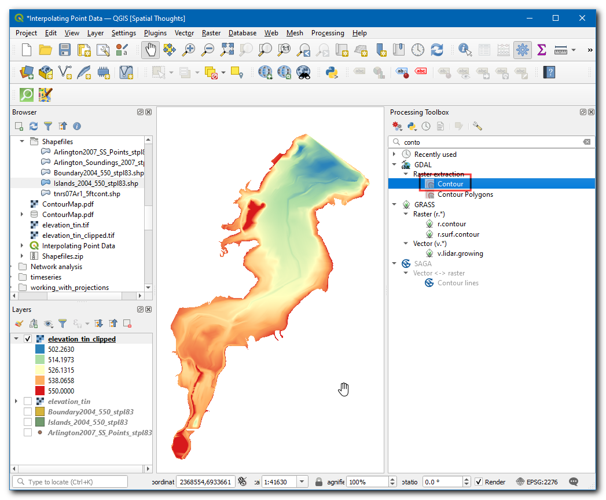
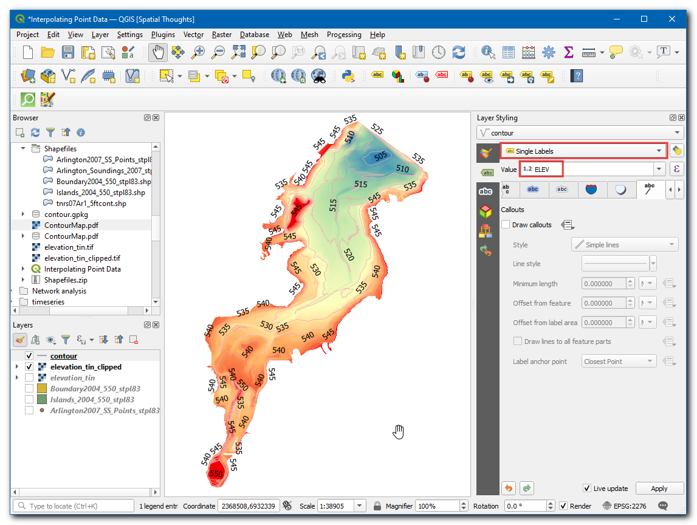

Ujaval Gandhi
Ujaval GandhiInterpoleren van puntgegevens¶
Interpoleren is een algemeen gebruikte techniek in GIS om een doorlopend oppervlak te maken uit afzonderlijke punten. Veel van de fenomenen in de echte wereld zijn doorlopend - hoogten, bodems, temperaturen etc. Als we deze oppervlakten voor analyses willen modelleren, is het onmogelijk metingen te doen over het gehele oppervlak. Daarom worden veldmetingen genomen op verschillende punten in het oppervlak en dan worden tussenliggende waarden berekend door een proces, genaamd ‘interpolatie’. In QGIS wordt interpolatie verricht met behulp van de ingebouwde gereedschappen voor interpolatie in de toolbox van Processing.
Overzicht van de taak¶
We zullen veld-dieptemetingen gebruiken voor Lake Arlington in Texas en een hoogte-reliëfkaart en contouren maken uit deze metingen.
Andere vaardigheden die u zult leren¶
Contouren maken uit puntgegevens.
Maskeren van waarden Geen gegevens uit een rasterlaag.
Labels toevoegen aan een vectorlaag.
De gegevens ophalen¶
Texas Water Development Board verschaft de shapefiles voor voltooide onderzoeken van meren.
Download de 2007-12 survey shapefiles for Lake Arlington.
Gemakshalve kunt u de in deze handleiding gebruikte voorbeeldgegevens direct downloaden vanaf de koppelingen hieronder.
Gegevensbronnen: [TWDB]
Procedure¶
Open QGIS, in Browser locate and drag the
Arlington2007_SS_points_stpl83the layer to canvas.

A Select Transformation of Arlington2007_SS_points_stpl83 dialog box will appear, leave the select to default and click OK.

De laag zal worden toegevoegd, zoek nu en sleep de laag
Boundary2004_550_stpl83.shpnaar het kaartvenster.

The layer will be added to the canvas, now turn off this layer to visualize the
Arlington2007_SS_points_stpl83.

Klik op het pictogram Inzoomen en selecteer een klein gebied op het scherm. Als u meer inzoomt zult u de punten zien. Elk punt vertegenwoordigt een meting door een Depth Sounder op die locatie opgenomen met een gereedschap DGPS.

Selecteer het gereedschap Objecten identificeren en klik op een punt. U zult zien dat het paneel Identificatieresultaten aan de rechterkant zal worden weergegeven met de waarden voor de attributen van dat punt. In dit geval bevat het attribuut
ELEVATIONde diepte van het meer op die locatie. Omdat onze taak is een diepteprofiel en hoogte-contouren te maken, zullen we deze waarden gebruiken als invoer voor de interpolatie.

Zoek in Browser en sleep de laag
Islands_2004_550_stpl83.shpnaar het kaartvenster.

De laag zal aan het kaartvenster worden toegevoegd, deze laag bevat de informatie over de eilanden in de regio die een constante hoogte zouden moeten hebben (zouden niet moeten worden geïnterpoleerd).

Zoek en lokaliseer, vanuit de Toollbox van Processing, het algoritme . Dubbelklik erop om het te starten.
Notitie
Resultaten van interpolatie kunnen significant variëren, gebaseerd op de methode en de parameters die u kiest. Interpolatie in QGIS ondersteunt de methoden Triangulated Irregular Network (TIN) en Inverse Distance Weighting (IDW) voor interpolatie. De methode TIN wordt algemeen gebruikt voor hoogtegegevens waar de methode IDW wordt gebruikt voor het interpoleren van andere typen gegevens zoals minerale concentraties, bevolking etc. Bekijk de module Ruimtelijke analyse van de documentatie van QGIS voor meer details.

In the TIN Interpolation dialog box, select
Arlington2007_SS_points_stpl83as the Vector layer,Elevationas the Interpolation attribute. Then click on the Add icon.

Selecteer nu
Islands_2004_550_stpl83als de Vectorlaag,Elevationals het Interpolatie attribuut. Klik dan op het pictogram Invoerlaag(lagen). Wijzig nu het Type van de laag naarLijnen opbreken.

Notitie
Lijnen opbreken stelt ons in staat onverwachte onderbrekingen in de hoogte te modelleren tijdens het modelleren van de lagen voor het oppervlak. Specificeren van het type laag naar Lijnen opbreken zal het algoritme voor interpolatie vertellen een constante hoogte te gebruiken voor de eilanden, in plaats van geïnterpoleerde waarden uit de punten.
Klik, in Bereik, op de
…en selecteer de laagBoundary2004_550_stpl83.

In Grootte uitvoerraster, stel de Grootte pixel X en Grootte pixel Y in op
5. Klik dan op de…onder Geïnterpoleerd om de laag op te slaan alselevation_tin.tif. Klik op Uitvoeren.

Nu zal een nieuwe laag
elevation_tinworden toegevoegd aan het kaartvenster.

Zoek en lokaliseer in Toolbox van Processing het algoritme . Dubbelklik om het te starten.

In het dialoogvenster Raster op maskerlaag clippen, selecteer
elevation_tinals de Invoerlaag,Boundary2004_550_stpl83als de Maskeerlaag. Klik dan op de…onder Geclipt (masker) om de laag op te slaan alselevation_tin_clipped.tif. Klik op Uitvoeren.

Nu zal een nieuwe laag
elevation_tin_clippedworden toegevoegd aan het kaartvenster. Klik op het pictogram Paneel Laag opmaken openen.

Stel de Symbologie in op
Enkelbands pseudokleur, klik op de pijl in Kleurverloop en selecteerKleurverloop omdraaien, voer0in bij Precisie label. Klik op Classificeren.

Zoek en lokaliseer in Toolbox van Processing het algoritme . Dubbelklik om het te starten.

In het dialoogvenster Contour, selecteer
elevation_tin_clippedals Invoerlaag, voer5.000in bij Interval voor contourlijnen. Klik op…in Contouren en voer de naam in alscontour.gkpg. Klik op Uitvoeren.

Notitie
De interval wordt gespecificeerd in de eenheid van het CRS van de laag. Onze brongegevens staan in het EPSG:2276 NAD83 / Texas North Central (ftUS) - dus de interval voor coutouren zal worden geïnterpreteerd als 5 feet.
Nu zal een nieuwe laag
contourworden toegevoegd aan het kaartvenster. Klik op het pictogram Paneel Laag opmaken openen. Schakel naar Labels.

Selecteer
Enkele labels, in Waarde kiesELEV.

Schakel nu naar Plaatsing en wijzig de Modus naar
Gebogen.

If you want to give feedback or share your experience with this tutorial, please comment below. (requires GitHub account)